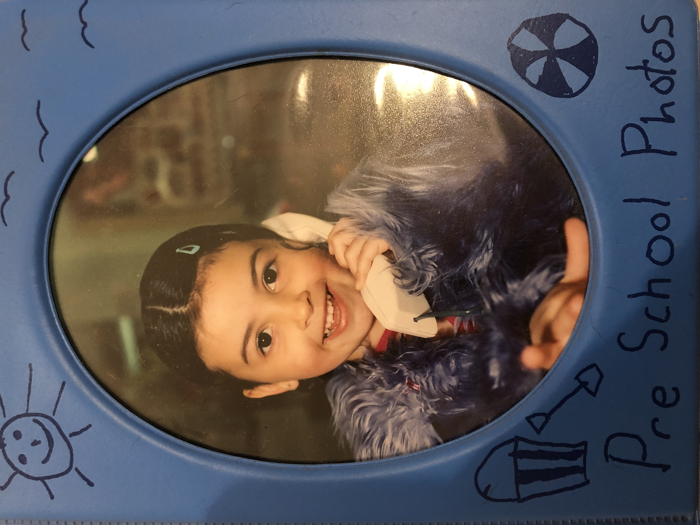
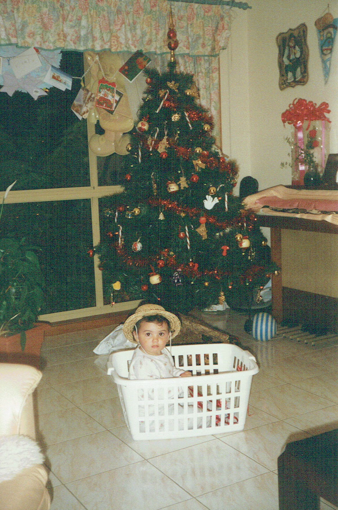

Who Doesn't Love a Block of Cheese? (1998)
Who Doesn't Love a Block of Cheese? (1998)

Kinder Photos (2001)
 A Screaming Christmas, (1997)
A Screaming Christmas, (1997)

Christmas Basket, (1997)
 A Day at the Farm, (1999)
A Day at the Farm, (1999)
 Argentinians Love Their Dress Up Parties, (1999)
Argentinians Love Their Dress Up Parties, (1999)
 Self Portraits, (1999)
Self Portraits, (1999)
Easter Morning, (2001)
 Adidas For Life, (1999)
Adidas For Life, (1999)
I Call This Look Swag, (2000)
Not Sure If Little Boy, (1998)
Chocolate, (1999)
Love To Sleep (1997)
Pumba, (1997)